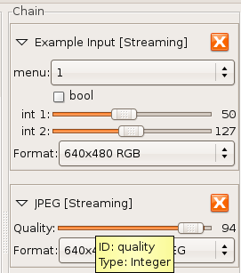

Image producing units often have controls and parameters that can be used to adjust the output. For example, cameras will typically might have exposure, white balance, or gamma controls. Alternately, a conversion unit may expose controls for affecting the exact conversion. For example, input.jpeg provides a parameter to control the compression quality.
Each CamUnit provides a list of controls that
it exposes, which can be enumerated and accessed programmatically.
Each control has a string identifier, the control
ID unique to the unit that can be
used for access.
To see which controls are available in a unit, it is probably fastest
to examine the unit in camview, which enumerates
all the controls for a unit and provides GUI widgets for adjusting
them. The control ID can be found by hovering the mouse over the
actual control and waiting for a tooltip to appear. Figure 2-1 shows an example of this.
Figure 2-1. Using camview to inspect available Unit controls and formats

Often, the easiest way to determine which controls and output formats are available for a given unit is to inspect it in camview.
Controls are strongly typed, and it is important to know the data type of a actual control before setting it. Five different types are supported, integers, booleans, double-precision floating point, strings, and enumerations. Additionally, numerical controls can also have a minimum and maximum value as well as a step size. For example, the quality control in the JPEG unit is an integer control that ranges from 0-100. To set this control, we could do:
cam_unit_set_control_int (jpeg_unit, "quality", 50);In addition to
cam_unit_set_control_int,
there are cam_unit_set_control_string,
cam_unit_set_control_float, etc.
Additionally, there are methods for retrieving the current value of a
control, all of which are described in the reference documentation.